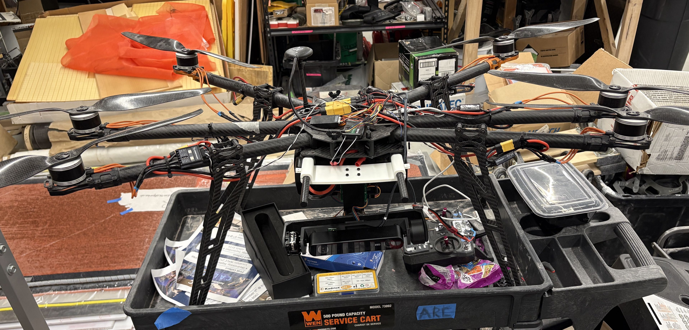
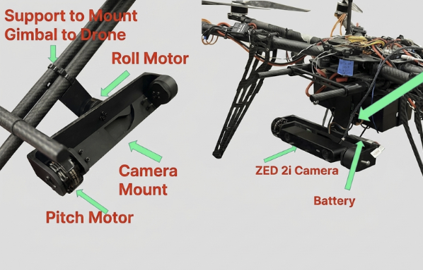
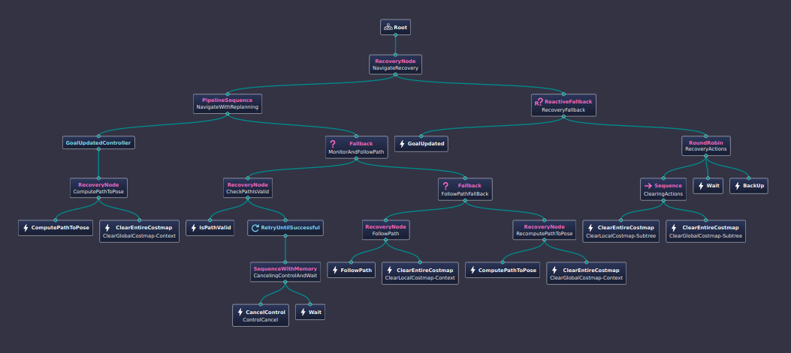

Problem
I'm the project manager of a team of engineering students building a campus-wide autonomous drone delivery system, using Tarot T960 frame hexacopters to reduce congestion on university campus walkways and roads. As part of this effort I designed and fabricated a programmable depth-camera gimbal built around an open-source board, along with a passive drone payload-delivery winch.

Constraints
- Autonomous flight over populated campus walkways and roads: demands redundant safety behaviors and fail-safes, not just point-to-point autopilot
- Passive, motor-free payload release and descent: no additional actuators or flight-controller integration on the delivery mechanism itself
- Precision landing and delivery-zone tolerance near pedestrians and structures
- Payload capacity: the drone is meant to carry 3.5 kg
- Airspace and campus operating restrictions: aiming to fly at 300 ft once the project is deployed. Campus has no-fly zones scattered throughout that routes must avoid, which requires coordinating with campus safety/FAA contacts to map and clear
- Landing and charging infrastructure: no en-route landing for delivery, packages are lowered via the passive winch instead. We're designing an auto-charging station as the only landing/parking spot, where drones dock and recharge between deliveries
My role
I lead the drone delivery project across navigation, landing, and electronics/mechanical subteams, and own the payload mechanism and hardware architecture.
Approach & key decisions
- Nav2 plans the route against a live obstacle map; a mission state machine I wrote in C++ does the actual flying, so there's one authority commanding the aircraft instead of two systems that could both try to fly it at once
- Every leg of the mission gets its route re-checked against the obstacle map in real time, not just the long ones
- Landing uses AprilTag detection to find the pad, then hands off to PX4's own landing mode for the final meter instead of the mission software cutting power itself
Results
The first full delivery mission flew end to end in simulation this month: takeoff, a 596 m transit around real Purdue building footprints, winch drop, return, tag search, and a precision landing, with no failsafe triggered. Getting there took six attempts and real debugging along the way, including a mid-flight instability I traced to the flight controller's own raw log (full story on Autonomy & Sim Stack) and a winch-state bug that surfaced during a full read of the flight code before I trusted it with a real cable (see Drone Payload Winch).
What I'd change
I'd have moved the simulated LiDAR to its real mounting position, under the airframe, much earlier. It sat in a convenient top-mounted spot for months, and moving it to match the real hardware late tripled the number of returns it produced and surfaced four bugs that had been hiding behind the wrong sensor geometry the whole time. Simulate the actual hardware position from day one, not a placeholder.
